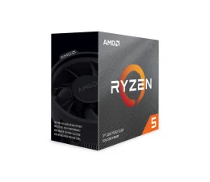
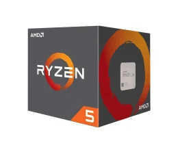
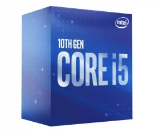

Procesory
-
Nazwa: Intel Core i5-10400F
Cena: 599,00 zł
Główne informacje:
-Taktowanie: 2.9 GHz
-Liczba rdzeni: 6 rdzeni
-Cache: 12 MB
-

Nazwa: AMD Ryzen 5 3600
Cena: 849,00 zł
Główne informacje:
-Taktowanie: 3.6 GHz
-Liczba rdzeni: 6 rdzeni
-Cache: 35 MB
-

Nazwa: Intel Core i5-10400
Cena: 699,00 zł
Główne informacje:
-Taktowanie: 2.9 GHz
-Liczba rdzeni: 6 rdzeni
-Cache: 12 MB
-

Nazwa: AMD Ryzen 5 1600 AF
Cena: 549,00 zł
Główne informacje:
-Taktowanie: 3.2 GHz
-Liczba rdzeni: 6 rdzeni
-Cache: 19 MB